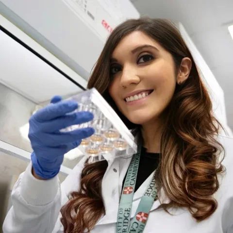
Elizabeth Figueroa-Juarez
Former PhD researcher; extracellular matrix remodelling and brown adipose tissue activation.
Original profileOur laboratory brings together researchers from molecular biology, physiology, bioinformatics, and clinical medicine, united by a shared interest in the mechanisms of metabolic disease.
Explore our research interests and backgrounds.
18 team members
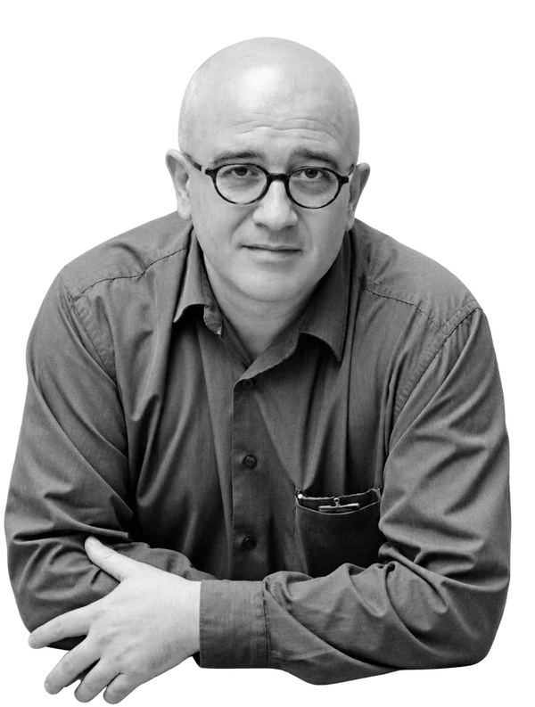
Professor Antonio (Toni) Vidal-PuigPrincipal Investigator Investigates how obesity leads to insulin resistance, diabetes and cardiometabolic disease, with a focus on adipose tissue expandability, lipotoxicity and brown fat thermogenesis. Read biographyClose biographyInvestigates how obesity leads to insulin resistance, diabetes and cardiometabolic disease, with a focus on adipose tissue expandability, lipotoxicity and brown fat thermogenesis.
A physician-scientist trained in Valencia, Granada and Harvard, Toni joined Cambridge in 2000. His team combines experimental models, human samples and integrated omics to identify pathways for future metabolic therapies.
View profile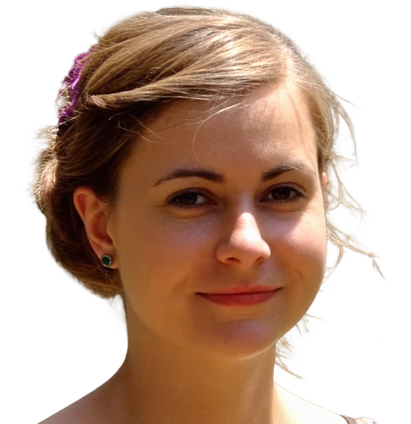
Katie FisherPersonal Assistant Personal assistant to Professor Toni Vidal-Puig at TVPlab. Read biographyClose biographyPersonal assistant to Professor Toni Vidal-Puig at TVPlab.
View profileLeads the scientific and operational management of mouse metabolic and cardiometabolic phenotyping programmes, coordinating resources and improving research workflows and quality.
His research interests span adipose tissue biology, mitochondrial dysfunction and metabolic phenotyping in obesity, diabetes and fatty liver disease.
View profile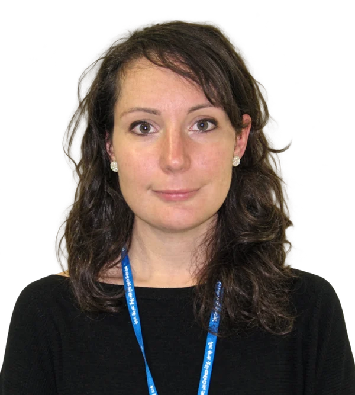
Dr. Vanessa PellegrinelliPostdoctoral Research Associate Studies how adipose tissue structure and extracellular matrix remodelling shape tissue plasticity and function, including fibro-inflammation and impaired brown fat thermogenesis. Read biographyClose biographyStudies how adipose tissue structure and extracellular matrix remodelling shape tissue plasticity and function, including fibro-inflammation and impaired brown fat thermogenesis.
An integrative physiologist with expertise in adipose biology and animal phenotyping, Vanessa combines in vivo and in vitro models with imaging and systems biology to investigate tissue dysfunction.
View profile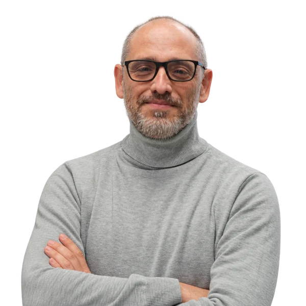
Dr. Sergio Rodriguez-CuencaAssistant Research Professor Explores lipid remodelling, mitochondrial function, peroxisomes and lipid droplets to understand adipose tissue metabolism and insulin resistance in obesity and metabolic disease. Read biographyClose biographyExplores lipid remodelling, mitochondrial function, peroxisomes and lipid droplets to understand adipose tissue metabolism and insulin resistance in obesity and metabolic disease.
Sergio earned his PhD in Biochemistry at the University of the Balearic Islands and joined TVPlab in 2006 with a Marie Curie fellowship. His work includes membrane phospholipids, sphingolipids and ether lipids.
View profile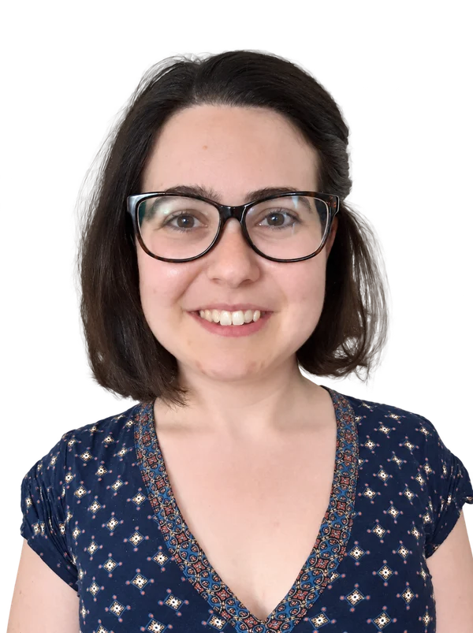
Dr. Sonia Rodriguez-FernandezPostdoctoral Research Associate Investigates the molecular steps that control human brown adipocyte differentiation and activation, seeking pathways that could increase brown fat recruitment and thermogenesis. Read biographyClose biographyInvestigates the molecular steps that control human brown adipocyte differentiation and activation, seeking pathways that could increase brown fat recruitment and thermogenesis.
With training in biology, clinical oncology and biosciences in Spain, Sonia joined TVPlab in 2019 through a Ramón Areces Foundation fellowship and subsequently became a Sir Henry Wellcome Postdoctoral Fellow.
View profile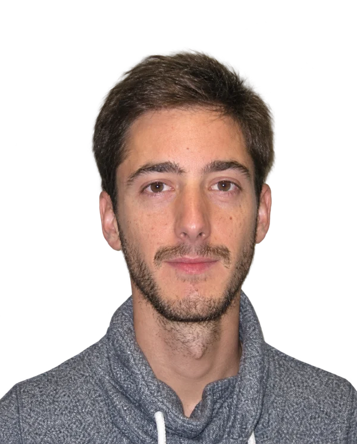
Dr. Guillaume BidaultPostdoctoral Research Associate Studies how macrophage lipid synthesis and remodelling regulate inflammation, and how these immune-cell processes contribute to the cardiometabolic complications of obesity. Read biographyClose biographyStudies how macrophage lipid synthesis and remodelling regulate inflammation, and how these immune-cell processes contribute to the cardiometabolic complications of obesity.
Guillaume joined TVPlab in 2013. His work connects immunology and metabolism, with particular interests in macrophages, lipids, obesity and cardiovascular disease.
View profileUses transcriptomics, machine learning and integrated multi-omics to understand liver and adipose tissue dysfunction, particularly the progression of MASLD and MASH.
Trained in computer engineering and bioinformatics at Patras, Ioannis completed his Cambridge PhD in collaboration with EMBL-EBI, studying disease mechanisms and how well rodent models represent human MASLD.
View profile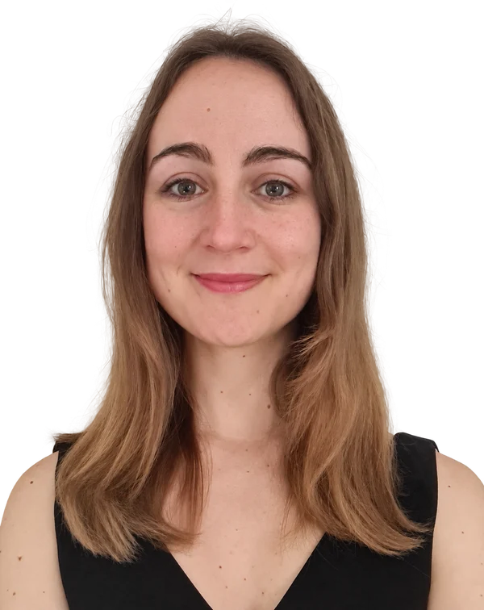
Dr. Isabel FusterPostdoctoral Research Associate Investigates how macrophages sense excess lipids and adapt their metabolism, exploring their roles in inflammation, fibrosis and metabolic syndrome and their potential as therapeutic targets. Read biographyClose biographyInvestigates how macrophages sense excess lipids and adapt their metabolism, exploring their roles in inflammation, fibrosis and metabolic syndrome and their potential as therapeutic targets.
Isabel trained in biochemistry and biomedical sciences at Valencia, where her PhD examined treatments in mouse models of MASLD. She joined TVPlab as a research associate in 2024.
View profileStudies how lipid metabolism in different macrophage populations influences the progression of fatty liver disease, focusing on membrane remodelling and new lipid synthesis in MASLD and MASH.
Hao completed a Biomedical Engineering PhD at Beihang University and joined TVPlab in 2024 with a Royal Society Newton International Fellowship. The project combines human liver samples with mouse models.
View profileStudies adipose tissue expansion and lipotoxicity, focusing on zinc-finger proteins that regulate adipogenesis and their potential as targets for obesity and related metabolic complications.
Ruoqi trained in medicine at Fudan University and worked in Qi-qun Tang's laboratory before joining TVPlab. She is now a Research Associate in the team.
View profile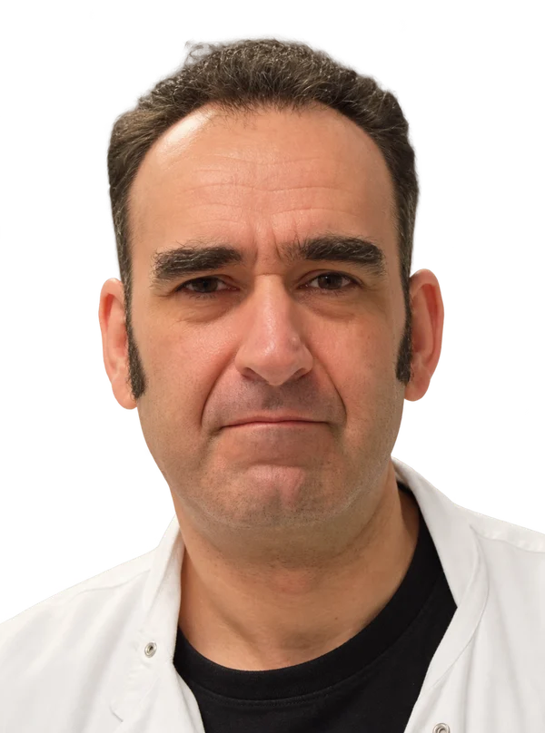
Martin DaleResearch Assistant Research assistant in the TVPlab team at Cambridge. Read biographyClose biographyResearch assistant in the TVPlab team at Cambridge.
View profile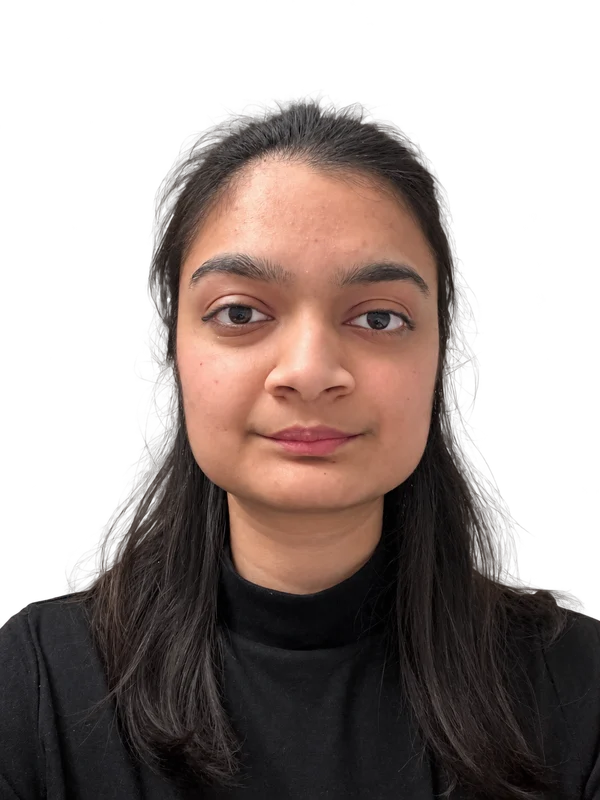
Nazuk GuptaResearch Assistant Investigates nutrient signalling and metabolic dysfunction, with interests in how diet shapes immune function and host–microbe interactions in the gut. Read biographyClose biographyInvestigates nutrient signalling and metabolic dysfunction, with interests in how diet shapes immune function and host–microbe interactions in the gut.
Nazuk studied biotechnology at Northumbria and molecular biomedicine at Copenhagen. She brings molecular biology expertise and experience with mouse models of gut disease to research connecting nutrition and chronic disease.
View profile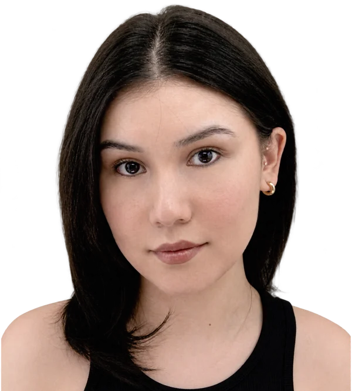
Milidili MaimaitiResearch Assistant Supports studies of adipose tissue and lipid metabolism, with interests in lipid droplets, mitochondrial function and macrophage lipid remodelling in obesity and type 2 diabetes. Read biographyClose biographySupports studies of adipose tissue and lipid metabolism, with interests in lipid droplets, mitochondrial function and macrophage lipid remodelling in obesity and type 2 diabetes.
With a background in biomedical sciences, Milidili brings experience in stem cell culture, molecular biology, ELISA, microscopy and metabolic phenotyping to experiments on cellular and systemic lipid flux.
View profile Cherub Kaida WuPhD · Lab Communication Director
Investigates brown adipose tissue dysfunction in obesity, with broader interests in energy metabolism and cellular organisation. Cherub also serves as the lab's Communication Director.
Read biographyClose biography
Cherub Kaida WuPhD · Lab Communication Director
Investigates brown adipose tissue dysfunction in obesity, with broader interests in energy metabolism and cellular organisation. Cherub also serves as the lab's Communication Director.
Read biographyClose biography
Investigates brown adipose tissue dysfunction in obesity, with broader interests in energy metabolism and cellular organisation. Cherub also serves as the lab's Communication Director.
Cherub's interdisciplinary research background spans neuroscience, cellular and molecular immunology, autoimmune disease and nanotechnology. Her PhD explores metabolic mechanisms within TVPlab at Cambridge.
View profileExplores the signalling pathways that govern human brown adipocyte differentiation, aiming to identify ways to enhance brown fat formation and improve metabolic health.
Possawee studied chemistry at Mahidol University and novel therapies at Imperial College London, developing interests in stem cells and gene therapy before beginning a Cambridge PhD in 2021.
View profileUses human induced pluripotent stem cells to study brown fat development, improving brown adipocyte differentiation and characterisation through transcriptomics and biological cryoimaging.
Iman previously worked at the Sanger Institute, gaining experience in cancer cell lines, organoids, high-throughput drug screening and automation. This experience and an interest in data science inform Iman’s stem cell research.
View profile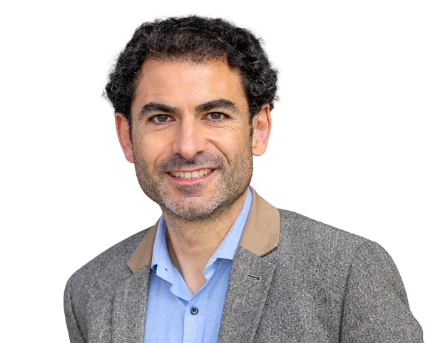
Dr. Rodrigo SantosVisiting Entrepreneur Helps identify opportunities to translate TVPlab discoveries into commercial applications, drawing on experience in cell biology and cell technologies across biotechnology and pharmaceutical research. Read biographyClose biographyHelps identify opportunities to translate TVPlab discoveries into commercial applications, drawing on experience in cell biology and cell technologies across biotechnology and pharmaceutical research.
Rodrigo completed his PhD at Cambridge's Stem Cell Institute. His career includes technology leadership at clock.bio, Mogrify and bit.bio, alongside entrepreneurship and investment roles including Cambridge Innovation Capital.
View profileOur wider community
Celebrating the people who have been part of our laboratory. Roles and affiliations below are recorded as listed on our original website.

Former PhD researcher; extracellular matrix remodelling and brown adipose tissue activation.
Original profile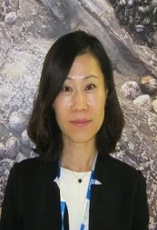
Former visiting scientist; inter-organ communication in glucose and energy homeostasis.
Original profile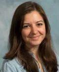
MD, PhD · Clinical Lecturer in Hepatology · University of Cambridge, UK
Original profileMD, PhD · Liver transplant and bariatric surgeon · Kaohsiung, Taiwan
Original profile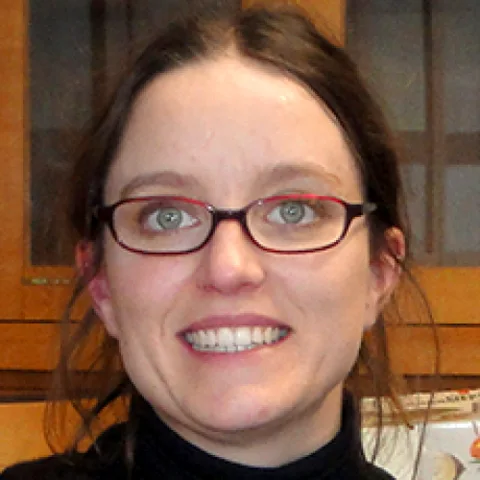
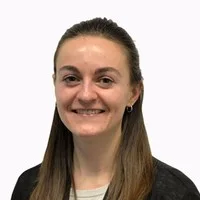
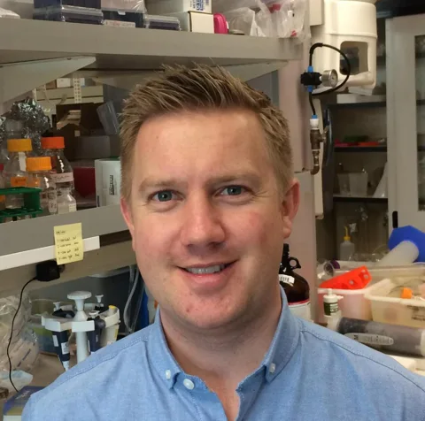
Senior Associate Director, Strategic Partnering · Boehringer Ingelheim · Cambridge, Massachusetts, USA
Original profile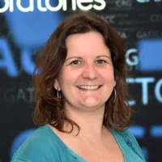
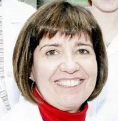
Associate Professor · Universidad Rey Juan Carlos · Madrid, Spain
Original profile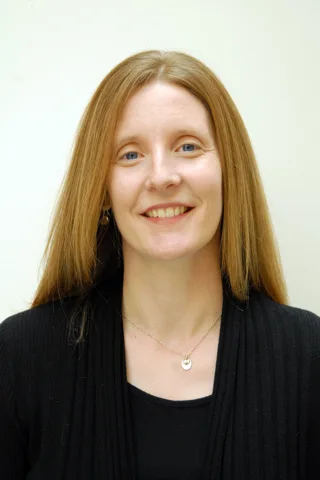
Canada Research Chair in Integrative Physiology of Diabetes; Associate Professor, University of Northern British Columbia; Assistant Dean, Curriculum, Northern Medical Program · Canada
Original profile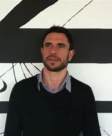
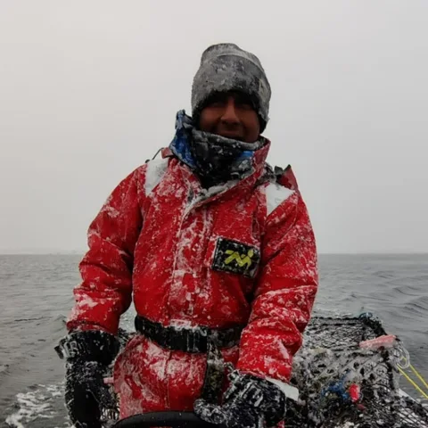
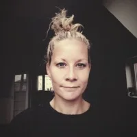
Senior Scientist, Stem Cell Research — Histology & Imaging · Novo Nordisk · Copenhagen, Denmark
Original profile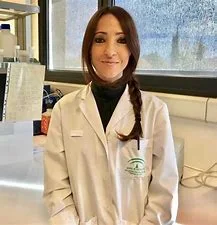
Postdoctoral researcher and Miguel Servet grant holder · IMIBIC · Córdoba, Spain
Original profile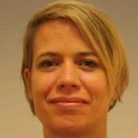
Specialist in adult inherited metabolic disorders · Amsterdam UMC · Amsterdam, Netherlands
Original profile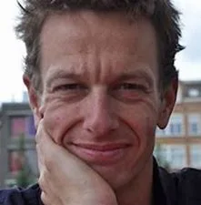
Endocrinologist · Academic Medical Center · Amsterdam, Netherlands
Original profile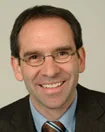
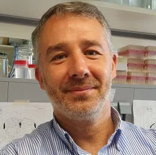